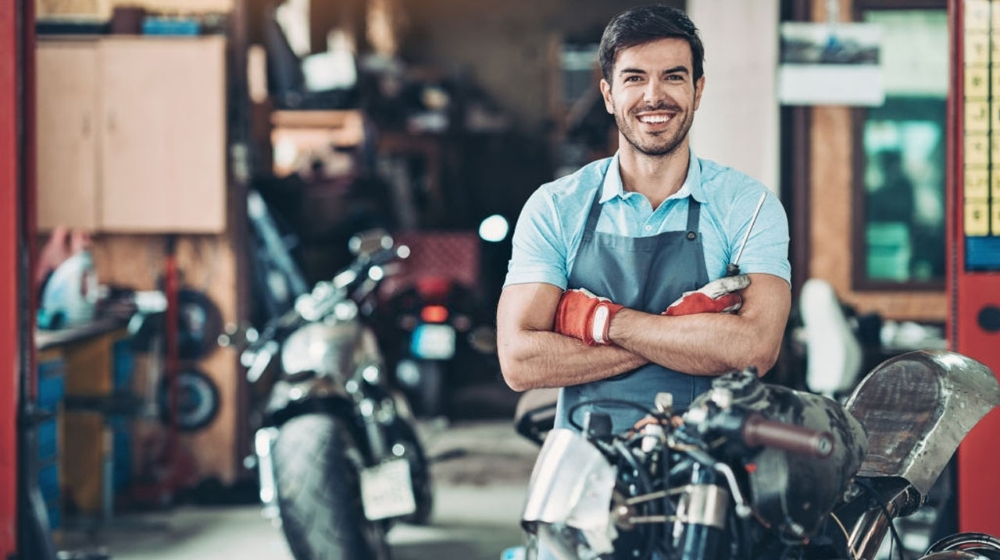

Sobre o Autor

Toda grande empresa nasce de uma faísca de paixão, e no Crusher, essa faísca veio de um garoto chamado João. João "Mão na Roda"—apelido carinhoso que ganhou na juventude e que carrega até hoje—não foi apenas o fundador visionário do Crusher; ele é, antes de tudo, um motociclista. E sua relação com as duas rodas e com a arte de vender começou muito cedo. A Miniatura e o Negócio de Quintal Aos oito anos, João não sonhava com bolas de futebol ou videogames. Seu tesouro era uma pequena coleção de miniaturas de motos, cada uma representando uma lenda—da Harley-Davidson à Yamaha. A mais cobiçada era uma réplica perfeita, em escala 1:18, de uma Superbike vermelha. Um dia, seu vizinho, um garoto um pouco mais velho chamado Pedro, viu a miniatura vermelha e se apaixonou. Pedro tinha uma miniatura rara de um capacete de corrida, que para João, era o acessório que faltava para sua coleção. João, com sua perspicácia infantil, não simplesmente trocou. Ele sabia o valor emocional de sua Superbike. A negociação durou uma tarde inteira, sob o sol do quintal. João fez questão de listar todos os "atributos" da sua moto: a cor vibrante, as rodas que giravam suavemente e a raridade do modelo. Ele fez Pedro entender que aquela não era apenas uma troca, mas um investimento na peça central de uma coleção. Ao final, João não só conseguiu o capacete raro, mas também convenceu Pedro a incluir um álbum de figurinhas extra na troca, fechando o negócio com um sorriso de satisfação. A Lição Levada para a Vida Essa simples troca de miniaturas plantou a semente do que se tornaria o Crusher. João aprendeu três lições fundamentais naquele dia, lições que formam a espinha dorsal de nossa empresa: Valorização do Produto: Saber o valor real e emocional do que se vende ou compra. Transparência é Negócio: Ser honesto sobre o produto cria confiança e fecha acordos mais sólidos. Foco na Paixão: O entusiasmo pelo objeto (a moto, neste caso) é o melhor combustível para a negociação. O Crusher é a realização daquele sonho de infância: criar um mercado onde os entusiastas pudessem valorizar e negociar suas máquinas com a mesma paixão e transparência daquele negócio de quintal. Hoje, João "Mão na Roda" lidera o Crusher com a mesma dedicação. Nossa missão é garantir que cada transação na plataforma seja feita com a mesma alegria e confiança que ele sentiu ao trocar sua Superbike vermelha. Crusher: Nascido da paixão, movido pela experiência.